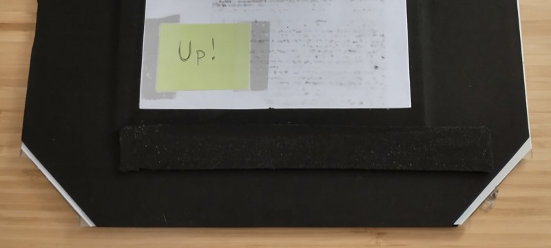
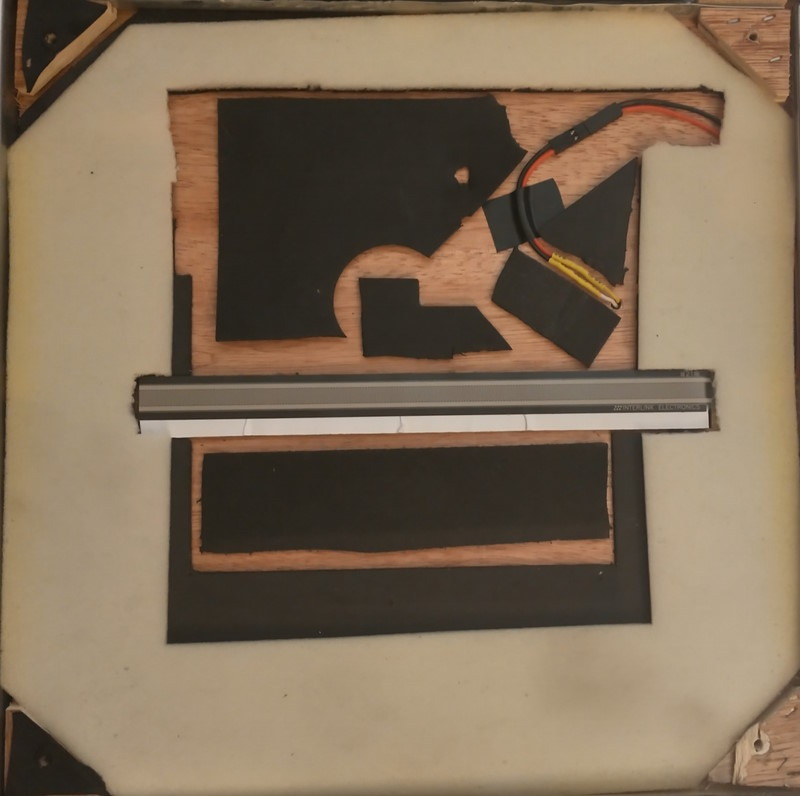
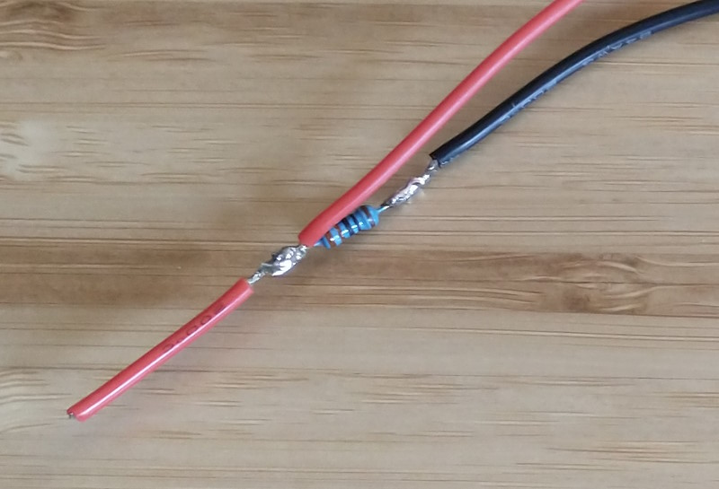
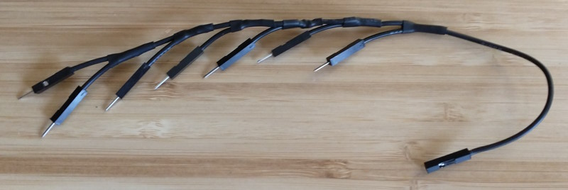

DE-15 (Male)

- -
- 🢄
- GND (🢄, 🢅)
- 🢅
- GND (🡄, 🡇)
- -
- -
- -
- -
- -
- 🡆
- 🡄
- 🡇
- 🡅
- GND (🡆, 🡅)

For nearly twenty years, I've had a metal RedOctane DDR pad (model: PXMTP) sitting alone and forgotten under the basement stairs in my parents' house. While contemplating ways to exercise at home without buying a bunch of equipment, I rediscovered the pad and thought DDR would be a great way to get my heart pumping. Unfortunately, the pad only has cables for the PlayStation 2 and original Xbox, making it useless for modern technology. Fortunately, those cables are not hard-wired directly into the pad - they're part of a control box that the pad connects to via a DE-15 connector. By swapping out or modifying the control box, it would be possible to have the pad connect to a computer via USB.
Get the DDR pad connected to a PC via USB so that it can be used with StepMania and RetroArch.
As luck would have it, a USB control box already exists for the RedOctane Afterburner DDR pad. Goal achieved! Thanks for reading.
... Except the control box costs a whopping $65 dollars, and it's unclear whether or not it would work with my pad. When Googling "RedOctane Afterburner", most results point to a different model (PXUMTP) that uses a DE-9 connector. Given the similarity in model names, it's possible that mine was a different revision of the Afterburner, but the store page for the control box doesn't clearly show which DE connector it uses. I did find a single eBay listing for the PXMTP that included a USB control box that looked the same, so 🤷. Regardless, $65 is too steep! Disqualified.
The original Xbox controller connector is secretly a USB cable in a proprietary housing. As a result, it's possible to purchase an adapter or modify the cable to use a standard USB-A connector. Ready-made adapters seem to be pretty cheap to buy - around $12 via Amazon - making them an affordable option. However, the primary concern for this solution is whether or not there will be driver support for a converted controller.
For Windows, it looks like Xb2XInput could work, though the developer specifically mentions that they haven't tried using any DDR pads and don't officially support them. Personally, I want to use Linux, and it sounds like the xpad kernel driver would support a converted original Xbox controller.
Ultimately though, I'd prefer to have a solution that makes the pad look like an XInput device to the PC, without requiring additional software. In my experience, XInput devices generally "just work" on both Windows and Linux, and enjoy ubiquitous support in games.
Using a microcontroller, it could be relatively straightforward to create a custom control box. With a male DE-15 connector that gives easy access to its individual pins, the microcontroller could monitor the signals on those pins and send appropriate XInput data over USB. A search for "Arduino XInput" quickly reveals the Arduino XInput Library, which should make it easy to send such data, and the library supports an assortment of Arduino, SparkFun, and Teensy microcontrollers.
Creating a custom control box has additional benefits beyond allowing the pad to act as an XInput device. By having control over the software running on a microcontroller, I can reprogram the pad to behave in whatever way I need or want. This would be most valuable if I later decide to upgrade the pad to use force-sensing resistors, replacing the crude contact sensors it came with.
Among the microcontrollers supported by the Arduino XInput Library, the Teensy-LC is the cheapest, and is also small enough to fit in the original control box enclosure. Looking at the hardware specs, the Teensy-LC also seems to outperform the similarly sized Arduino Micro and SparkFun Pro Micro while being 1/2 to 2/3 the cost.

The DE-15 terminal block breakout can be easily removed from its plastic case - it simply slides out. It's a good thing, too, because its case is too large to fit in the DDR pad's control box enclosure.
I used pins 14-19 on the Teensy since these are the lowest-number pins that support analog signals. For now, only digital pins are needed, but if/when I upgrade to FSRs, I don't want to have to rewire anything or change constants in the code. Here's the wire layout:
| Teensy Pin | DE-15 Pin(s) | PXMTP Button | Wire Color |
|---|---|---|---|
| GND | 3, 5, 15, GND | - | Black |
| 14 (A0) | 11 | 🡆 | Yellow |
| 15 (A1) | 12 | 🡄 | Orange |
| 16 (A2) | 2 | 🢄 | Purple |
| 17 (A3) | 14 | 🡅 | Blue |
| 18 (A4) | 13 | 🡇 | Green |
| 19 (A5) | 4 | 🢅 | White |
I was planning to also hook up the control box's START/SELECT buttons, but accidentally melted the inside of the START button when de-soldering the wires connected to it. With START broken, I convinced myself that I didn't really need SELECT, either - the up-right arrow will be used to confirm menu items and the up-left arrow will be used to go back. For all other inputs, the PC will use a wireless keyboard/mouse. With that out of the way, I re-purposed some of the black wire from the START/SELECT buttons to daisy-chain GND connections on the DE-15 terminal block breakout.
Unfortunately, the USB-B panel mount cable is too long to be able to position the mount over top of the original hole that the control box had for the PS2/Xbox cables. So instead, I drilled new holes off to the side and filed the center hole down to size. I may eventually investigate ways to plug the open holes on the case, but overall, I'm really happy with how everything turned out!
The Arduino XInput Library really trivialized the programming required for this project, but I also incorporated the Bounce2 library to prevent buttons from double/triple/quadruple triggering. Buttons triggering multiple times wasn't a problem for normal gameplay, but it made navigating menus very annoying.
While I had hoped that the result of this project would be a plug and play experience on both Windows and Linux, I did end up having to do some extra configuration on Linux. The xpad kernel driver maps d-pad inputs to axes instead of discrete buttons, which can't be bound in StepMania and can't be used for jump steps that require pressing multiple directions at the same time. I ended up using xboxdrv instead of xpad, and have detailed the steps I took to install/configure xboxdrv in the RedOcteensy git repo README.
After playing for a bit, I feel like FSRs are an imminent upgrade. The force required to consistently activate buttons with the current contact sensors is too great to be able to reliably hit faster note sequences, and uses an exhausting amount of energy. The down arrow is particularly bad.
So, to be continued?
Christmas came, and with it, so did parts and tools. Time to upgrade! (He says, in May)
The original contact sensors require pushing an acrylic top plate down until it touches a metal mesh below it, completing the circuit. Due to the stiffness of the acrylic and the distance to the metal mesh, a relatively considerable amount of force is required to trigger a button press.
Again, due to the stiffness of the acrylic top plates, it's all too easy for a button to double trigger from the pressure on the acrylic fluctuating during a step. I mitigated this by debouncing button inputs in software, but the technique wasn't perfect and double triggering still occasionally occured.
The original sensors work best when the very center of a button is pressed. The center is where the metal mesh is positioned, and is also the easiest part of the acrylic to deform/push downward (the sides are propped up slightly by some foam padding underneath). Hitting the edge of a button results in a much less consistent trigger.
I've been experiencing an intermittent issue with the xboxdrv driver in Linux where the computer will sometimes disconnect the Teensy in the middle of a song (the Teensy's LED turns off, indicating that power has been cut off). When this happens, I have to unplug the pad, restart the xboxdrv daemon via systemctl, and then plug the pad back in. It's super frustrating! So, although it's unrelated to FSRs, while I'm re-programming the Teensy, I'm going to switch to using the built-in joystick API. In hindsight, using the XInput library seems like unnecessary complexity, as StepMania will work with any gamepad (though just think about how cool it would be to play Elden Ring with a DDR pad!).
Compared to the initial conversion, which had the microcontroller simply plug into the pad's existing circuits, upgrading to FSRs requires modifying the pad and creating more complex circuits. A number of basic electrical components and tools are required to build everything:
Using Dupont-style connectors throughout the build provides a couple of benefits. First, placing a connector onto the end of each FSR allows for easily replacing a sensor if/when one breaks (or more realistically, when my sketchy solder connection fails). Second, the connectors plug directly onto the Teensy's header pins and into a solderless breadboard, making it easy to prototype circuits before final assembly. One downside to using these connectors is that they do not clip into one another and are only held together by friction. However, that friction seems more than adequate.
The "only" modification necessary on the pad itself is to swap out each button's contact sensor for an FSR. However, the devil is in the details! There were a number of concerns I wanted to address while making the swap.
As mentioned earlier, I wanted the ability to easily replace sensors if/when necessary. I used hook and loop tape to secure FSRs to the pad, and Dupont-style connectors to plug the FSR into the pad's existing wiring. This makes it easy to remove a sensor, though will require some time to prep a new sensor for installation.
Due to the hook and loop tape elevating the FSRs, there needs to be enough raised support elsewhere along the button cavity in order to maintain a relatively level surface. Not only does an uneven surface feel weird under foot, but it also risks damaging the acrylic top plates.
In my first iteration (shown above in the animated GIF), I placed FSRs along the inside edge of each button cavity, about two inches away from the center panel. I then re-used as much of the existing foam insert as possible to keep the rest of the button elevated. By keeping the contact sensor, which is in the center of the button and elevated by both a piece of foam and a thin piece of wood, I was hoping there would be enough support. However, I still managed to crack my down arrow's acrylic because the far edge of the button could be pressed too much relative to where the FSR was, 😥.
The pad is going to be stomped on, so we want to do whatever we can to protect the components in each button cavity. I was most worried about the solder connections on the FSRs and the Dupont-style connectors.
In my first iteration, I laid the Dupont-style connectors next to the original contact sensor. The contact sensor is thick enough that it would be hit before any pressure would be applied to the wire connector. In my second iteration (shown further below), I used double-sided tape to secure scrap pieces of the button insert's black foam around the connectors. The combined thickness of the tape and the foam is similar to the thickness of the contact sensor.
To mitigate damage to solder connections on the FSRs, I cut away a small amount of the denser black foam that was laying on top of the connections, while leaving the fluffier white foam above. My hope is that the remaining black foam to the sides of the connection will absorb some of the shock of a button press. I also oriented the FSR so that the soldered bits are up against the edge of the button where it's less likely to see heavy/focused weight.
Here's where I goofed in my first iteration. I chose to place sensors close to the center panel for a couple of different reasons. First, if I ever become amazing at minimizing the amount of distance my feet travel, then having sensors close to the center will allow for the greatest amount of sensitivity tuning and for the most reliable button presses. Second, it allowed me to keep the original contact sensors in the center of the button cavity to provide support, as previously mentioned.
Ultimately, this positioning didn't allow for reliable button presses across the entire button surface. The acrylic is too flexible - once I went past half-way on a button, I could stand on it with all of my weight and the FSR would not be impacted. I even took a cut-out of the black foam, positioned it directly on top of the FSR, and used double-sided tape to secure it to the acrylic plate. This helped, but still wasn't good enough:
I ended up re-arranging the FSRs to run through the middle of each button cavity, spanning from the center towards the outside edge. This required cutting out the original contact sensor, so I filled the now-empty areas of the cavity with scrap cuts of the black foam and used double-sided tape to secure them in place/add support:
While this iteration hasn't really added any more raised supports than my first attempt, it seems to be working well. It feels flat enough under foot, and I haven't had any additional acrylic cracking. I did need to keep and reposition the extra piece of black foam taped to the bottom of the arcylic, directly above the FSR, but I can now press anywhere on the button and get a reliable, sensitive trigger.
All of the wiring inside of the control box needs to be re-done. Originally, each input pin on the Teensy only needed to have a single wire going to it, but now each pin needs two - one bringing voltage into the pin, and the other dumping voltage to ground through a resistor. So I soldered and crimped up a bunch of pigtail cables, after I had experimented with different resistor values and settled on 330 Ohms:
One other major difference compared to the initial conversion is that the DE-15 pins that used to be shared button ground connections (pins 3, 5, and 15) are now shared +3V lines. Previously, I daisy-chained pins 3, 5, 15, and GND together and then had one wire running to the Teensy's GND pin. However, the pigtails above are now carrying the ground for each button (and there are six of them), plus there's still the GND pin on the DE-15 connector. In order to get everything grounded, I soldered together a wire harness. BEHOLD! My magnum opus:
By switching to the built-in joystick API and due to no longer needing to debounce inputs, the code ended up way simpler than before! I've traded increased electrical complexity for reduced software complexity. While prototyping, I also found that a single sensitivity threshold worked comfortably for every button, which helped keep the code concise.
To find a suitable sensitivity threshold for buttons, I started by using the example analog input code from PJRC and getting a sense of what values the Teensy would read. Eventually, once I had the Joystick code and an initial threshold in place, I simply opened up the OS's gamepad settings (e.g., joy.cpl in Windows) and watched buttons light up in the UI as I pressed them, then tweaked accordingly.
It's worth noting that there are already other code projects out there for FSR pads that could be adapted to the PXMTP, such as the incredible looking Teejusb FSR project. I didn't go that route because I didn't want to take the time to install Python, Node, Yarn, and do the config/build steps necessary to get the web interface running (and the web interface is def the coolest/most useful part in terms of fine-tuning button sensitivities). It took very little time to find a sensitivity I was happy with via trial-and-error instead, but if you already have Python/Node/Yarn installed and/or want the additional features (e.g., profiles), then Teejusb's project looks like a fantastic option.
Holy smokes, is it great. Navigating menus is so much better now that double triggering never happens, and the button sensitivity is perfect. It's a massive improvement! We'll have to wait and see how well the pad components hold up to abuse over time, but so far so good.